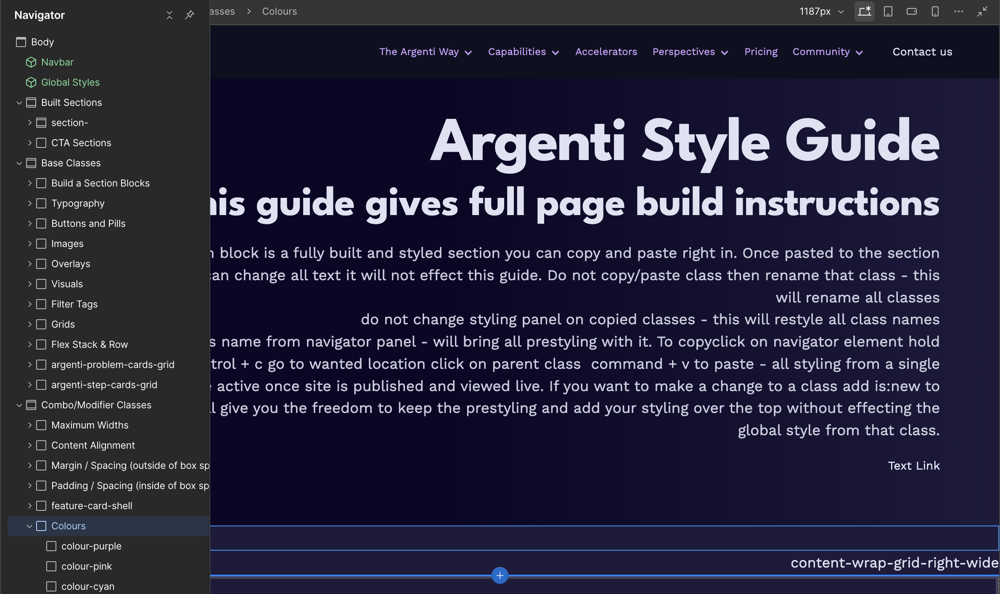
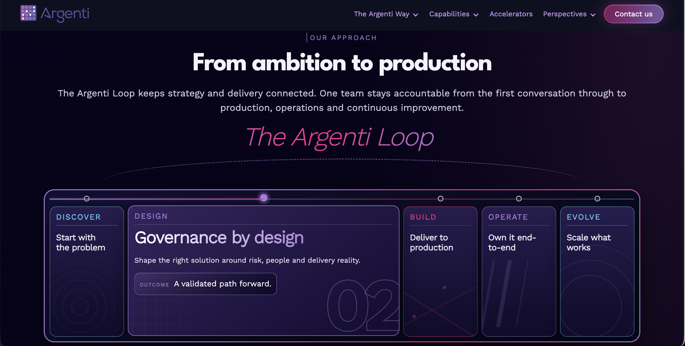
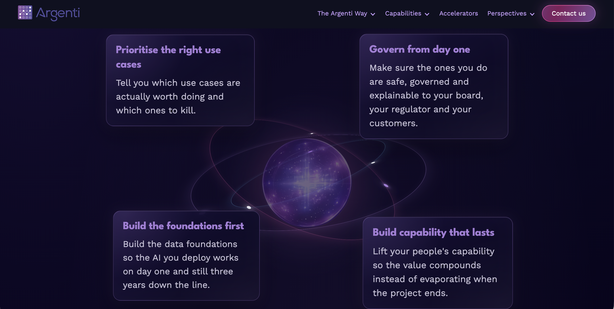
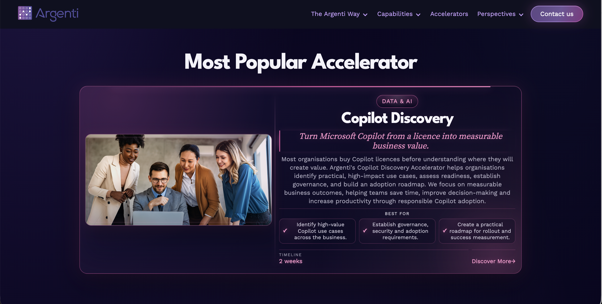
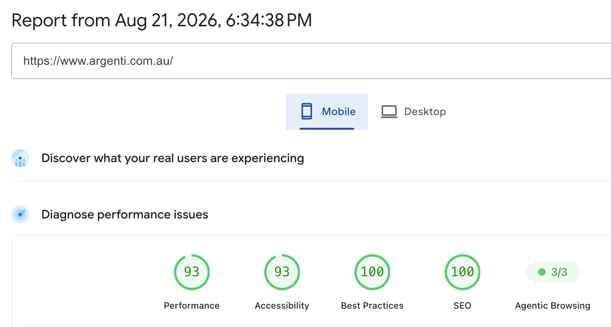
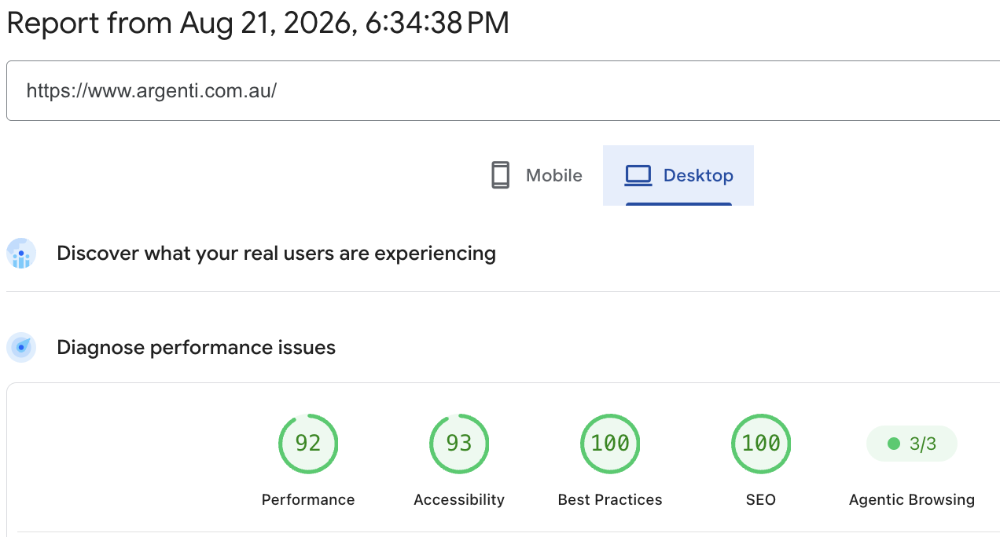

CMS-driven production website
Argenti × JM Sites · Technical Case Study
Inside the Argenti Build
How a focused Webflow redevelopment grew into a connected website platform spanning reusable systems, CMS architecture, custom front-end development, responsive implementation, performance, QA and handover.
Custom front-end functionality
Templates · taxonomy · filters
Mobile · Desktop 65 → 90+
More than a collection of pages
As the project expanded, the challenge became building a website Argenti could continue using after launch, not just a collection of pages that only workeds with me or a developer.
01
System
→
Reusable Webflow foundations
02
CMS
→
Connected publishing
03
Extend
→
Custom front-end logic
04
Build
→
Custom visual systems
05
Verify
Performance + launch
01 · Webflow architecture
A system that evolved with the website
Argenti didn't begin with a perfectly mapped design system. As the website expanded, I could see where one-off classes and page-specific decisions were becoming harder to manage.
I created the Style Guide as a source of truth for the reusable parts of the site — typography, layouts, buttons, colour treatments, grids and common components — while existing page-specific systems were progressively consolidated rather than rebuilt simply for the sake of consistency.
Reusable heading, body and supporting text treatments.
Containers, content wrappers, grids and responsive section patterns.
Buttons, cards, CTAs, capability tags and image treatments.
Shared systems where possible and isolated page logic where genuinely necessary.
Development principle
Reuse first · Override second · Add new structure only when it is genuinely needed

02 · CMS architecture
Building a connected publishing system
Blog Posts, Authors, Case Studies and Accelerators needed to behave as connected content systems rather than pages rebuilt manually every time something new was published.
01
Blog Posts
02
Authors
03
Case Studies
04
Accelerators
Source
CMS Record
Surface
Listing Card
Page
Template
Logic
Filtering
Discovery
Related Content
Capability became part of the system
Shared capability values could influence categorisation, filtering, visual treatments and related-content behaviour.
The team manages records, not layouts
Templates control the presentation while the team manages content safely through CMS fields.
03 · Custom code and debugging
Where Webflow stopped being simple
As the website became more complex, some problems stopped being purely Webflow problems. CMS relationships, custom code, responsive behaviour, third-party scripts and runtime state could all interact with one another.
Custom CSS
JavaScript
Finsweet
HubSpot
DevTools
GTM
GA4
Consent
Real debugging example
The Case Study filters
What looked like a simple filter interface depended on CMS taxonomy, capability and industry values, Finsweet attributes, template behaviour and visual colour logic.
Instead of continuing to change the design, I inspected the published state with DevTools and traced the behaviour back through the systems that actually owned it.
Symptom
↓
Inspect runtime
↓
Identify owner
↓
Fix source
↓
Verify
Identify the owning system and fix the source of the issue rather than adding another patch to hide the symptom.
I am strongest where Webflow stops being simple
04 · Custom implementation
Building the parts that did not fit a template
Not every important section could come from a standard component library. Some parts of the site needed their own visual and responsive logic while still belonging to the wider Argenti design language.
These sections combined Webflow structure with custom CSS, responsive rules and page-specific implementation where the shared system alone was not enough.



05 · Performance and release
Built to hold up after launch
Performance, responsive behaviour, CMS output, forms, tracking and production behaviour were treated as part of development rather than something to check once the design looked finished.
46
→
90+
65
→
90+


Google PageSpeed Insights · Live production testing · 21 August 2026 · Lighthouse scores are laboratory estimates and can vary between runs.
Test the real system
Responsive behaviour, CMS templates, navigation, forms, HubSpot, consent, tracking, redirects, legal links, browser behaviour and performance were included in final verification.
Do not leave the system in my head
CMS administration, the Style Guide, custom-code ownership, integrations, troubleshooting and launch processes were documented so the team could understand what they were inheriting.
The result
Not just a redesigned website A system Argenti can keep growing
The finished website became a connected Webflow platform Argenti can publish into, measure, maintain and continue growing — supported by reusable architecture, structured CMS publishing, custom front-end development, technical QA and documented handover.